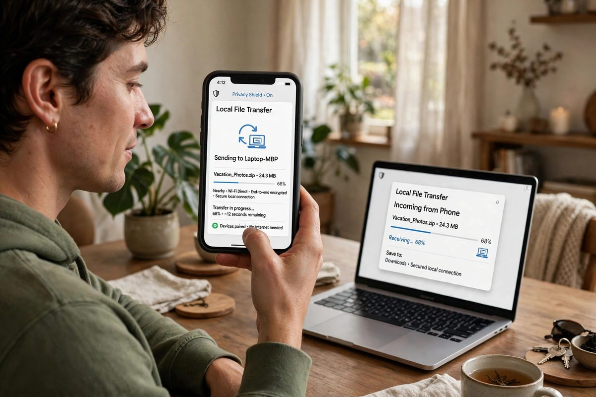

Home > Guides > How to Share Files Privately Without the Cloud
How to Share Files Privately Without the Cloud
A practical guide from PairDrop.

Every time a file goes to a cloud service, a copy sits on a server owned by someone else. For many files that is fine, but for personal documents, family photos, work contracts and health records, you may prefer a method that never uploads anything. Local sharing moves a file directly from one device to another, with no server in the middle. This guide explains which methods are truly local, how to use them, and the small habits that keep a private share private. It is not about hiding from the world; it is about choosing who holds a copy of your files.
Know which methods are local and which are not
A cable, Bluetooth, Wi-Fi Direct, a local hotspot and a USB drive are local: the file travels directly between your devices. A cloud link, an email attachment and most chat apps are not local: the file is uploaded to a server and then downloaded. A messaging app may encrypt the file in transit, but a copy still passes through its servers. If privacy matters, choose a local method first. If you must use an online method, choose one with a link that expires, and delete the file from the service after the recipient confirms receipt. Knowing the difference is the first step to sharing privately.
Use local methods for sensitive files
For a sensitive file, a cable or a USB drive is the most private choice, because nothing leaves your hands. Wi-Fi Direct and a local hotspot are also private, because the file only travels over a local radio link. Keep both devices close, keep the transfer short, and turn off sharing afterwards. Do not use a public computer or a shared device for a private transfer if you can avoid it. If you must, delete the file from that computer after the transfer and empty its recycle bin. A private share is as much about where the file lands as how it travels.
Protect the file itself, not just the transfer
A local transfer can still leave a copy in the wrong place. After a transfer, check where the file was saved on the receiving device and move it to a safe folder. Delete temporary copies, and do not leave a sensitive file in a downloads folder that anyone using the device can open. If the file is very sensitive, protect it with a password before you send it, and share the password separately. Keep a record of what you shared and with whom, so you can follow up if a device is lost. Privacy is a habit, not a single setting.
Clean up and check your settings
After a private share, turn off discovery, Bluetooth and hotspot features you no longer need, and remove the shared file from any temporary location. Check the sharing settings on both devices to make sure you have not left a folder shared with everyone on the network. Review old shared links and delete the ones you no longer need. These clean-up steps take a minute and prevent a private file from staying available long after the transfer is forgotten. The safest share is one that ends cleanly.
Quick tips
- Choose a local method for sensitive files
- Turn off discovery after the transfer
- Delete temporary copies
- Share the password separately from the file
Frequently asked questions
What is the most private way to share a file?
A cable or a USB drive is most private, because the file never goes to a server or over a network. Wi-Fi Direct and a local hotspot are also local and private.
Does a chat app keep my file private?
It may encrypt the file in transit, but a copy still passes through the app's servers and can be forwarded. For sensitive files, a local method is safer.
How do I know if a method uploads to the cloud?
If it needs an account, a link, or an internet connection to work, it probably uploads the file. Local methods work with Wi-Fi, Bluetooth or a cable and no account.